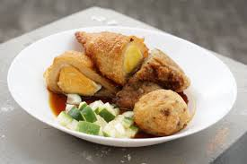
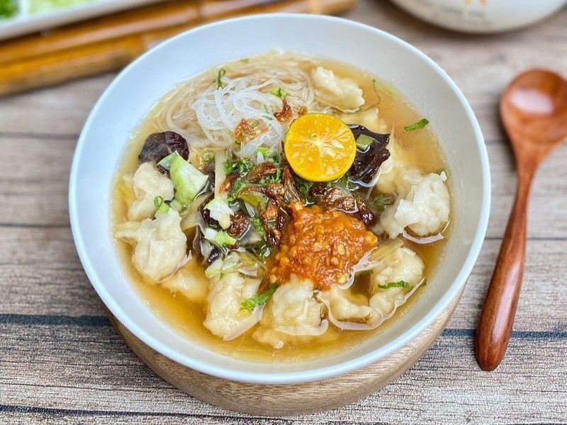
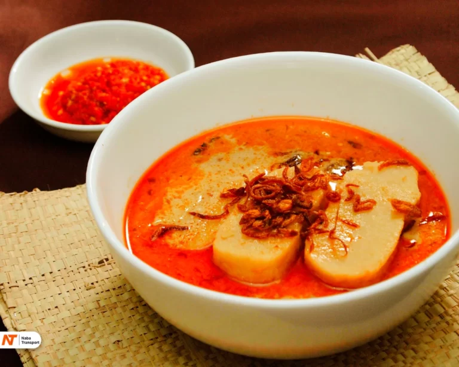
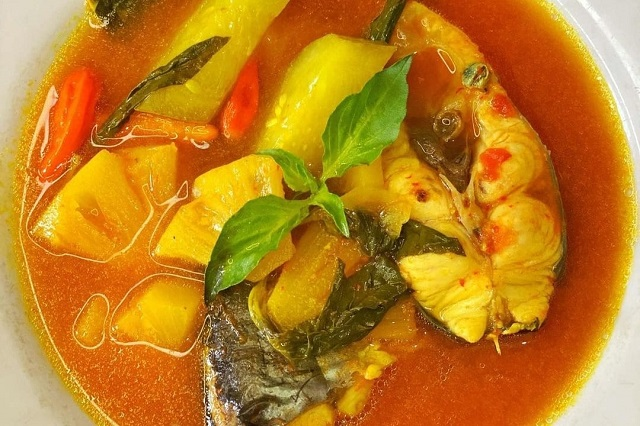

Pempek
Camilan ikan khas Palembang yang digoreng atau direbus, disajikan dengan cuka ikan (cuko) pedas manis.
Bahan-bahan:
- 500 gr ikan tenggiri fillet, haluskan
- 200 gr tepung sagu
- 2 siung bawang putih, haluskan
- 1 sdt garam
- Air secukupnya
Cara membuat:
- Campur ikan halus, bawang putih, garam, dan air hingga rata.
- Tambahkan tepung sagu sedikit demi sedikit hingga adonan bisa dipulung.
- Bentuk sesuai selera, rebus hingga mengapung, angkat dan tiriskan.
- Goreng pempek hingga kecoklatan jika suka.
- Sajikan dengan cuko (kuah cuka pedas manis) dan irisan timun.

Tekwan
Sup ikan dengan bola-bola ikan dan bihun, kuah bening harum dengan jamur dan ebi.
Bahan-bahan:
- 250 gr ikan tenggiri fillet, haluskan
- 100 gr tepung sagu
- 2 siung bawang putih, haluskan
- 1 sdt garam
- 1,5 liter kaldu udang
- Bihun, jamur kuping, daun bawang
- Garam dan merica secukupnya
Cara membuat:
- Campur ikan, bawang putih, garam, dan tepung sagu hingga adonan bisa dibentuk bola-bola.
- Rebus bola-bola ikan hingga mengapung, angkat dan tiriskan.
- Rebus kaldu udang, masukkan jamur dan bihun, beri garam dan merica.
- Masukkan bola-bola ikan ke dalam kuah, taburi daun bawang.
- Sajikan hangat.

Laksan
Pempek tipe kuah santan dengan irisan pempek lenjer, kuah gurih dan sedikit pedas.
Bahan-bahan:
- 200 gr pempek lenjer, iris tipis
- 500 ml santan
- 2 siung bawang putih, haluskan
- 1 lembar daun salam
- 2 cabai merah keriting, iris halus
- Garam dan gula secukupnya
Cara membuat:
- Rebus santan dengan bawang putih, daun salam, dan cabai hingga mendidih dan bumbu meresap.
- Masukkan irisan pempek, masak sebentar.
- Sajikan hangat dengan taburan daun bawang.
Celimpungan
Pempek tipe tekwan dengan kuah santan kental dan rempah harum.
Bahan-bahan:
- 250 gr ikan tenggiri, haluskan
- 100 gr tepung sagu
- 500 ml santan
- 2 siung bawang putih
- 1 lembar daun salam
- 2 batang serai
- Garam dan merica secukupnya
Cara membuat:
- Buat adonan pempek, bentuk bola-bola kecil dan rebus hingga mengapung.
- Rebus santan bersama bawang putih, daun salam, dan serai hingga harum.
- Masukkan bola pempek ke dalam kuah santan, beri garam dan merica.
- Masak sebentar lalu sajikan hangat.
Model
Pempek isi tahu yang digoreng dengan tekstur renyah di luar dan lembut di dalam.
Bahan-bahan:
- 200 gr pempek lenjer
- 100 gr tahu putih, hancurkan
- Minyak untuk menggoreng
- Kuah cuko pedas manis
Cara membuat:
- Belah pempek lenjer, isi dengan tahu hancur.
- Rekatkan dan bentuk bulat, goreng hingga kecoklatan.
- Sajikan dengan kuah cuko khas Palembang.

Pindang Patin
Ikan patin dimasak dengan bumbu pindang khas Palembang, rasa asam, pedas, dan segar.
Bahan-bahan:
- 1 ekor ikan patin, potong-potong
- 2 liter air
- 5 siung bawang merah
- 3 siung bawang putih
- 3 buah cabai merah keriting
- 2 buah asam kandis atau belimbing wuluh
- 2 batang serai, memarkan
- 3 lembar daun salam
- Garam dan gula secukupnya
Cara membuat:
- Rebus air bersama bawang merah, bawang putih, cabai, serai, daun salam, dan asam kandis hingga mendidih.
- Masukkan ikan patin, beri garam dan gula, masak hingga ikan matang dan bumbu meresap.
- Sajikan panas dengan nasi putih.